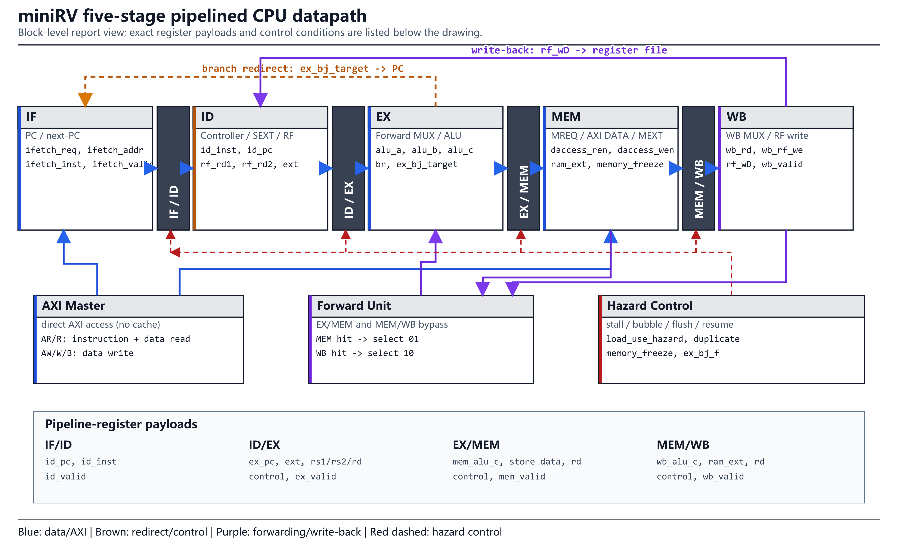
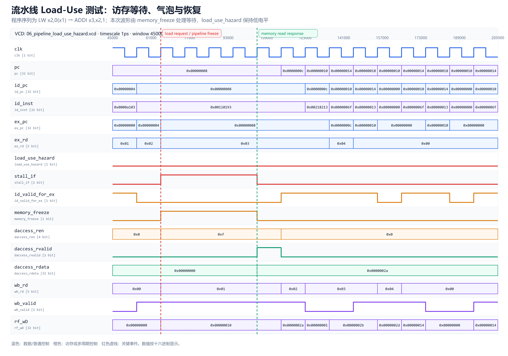
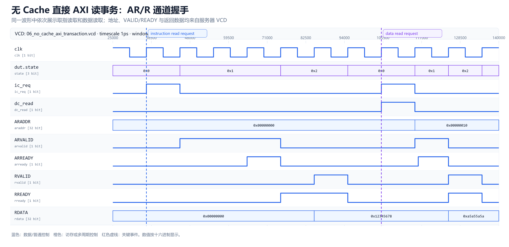
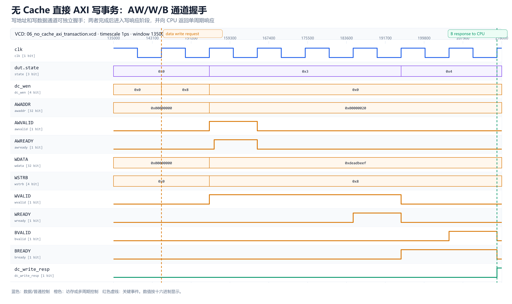
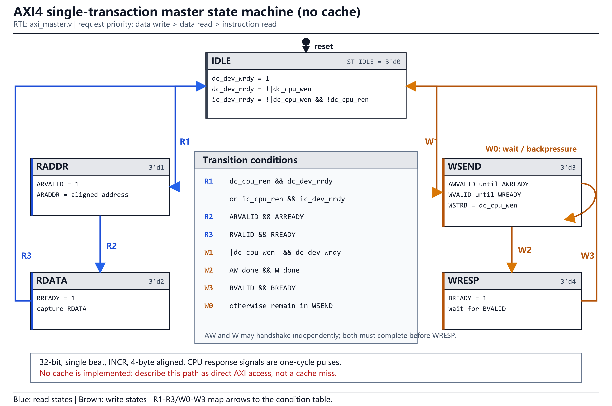
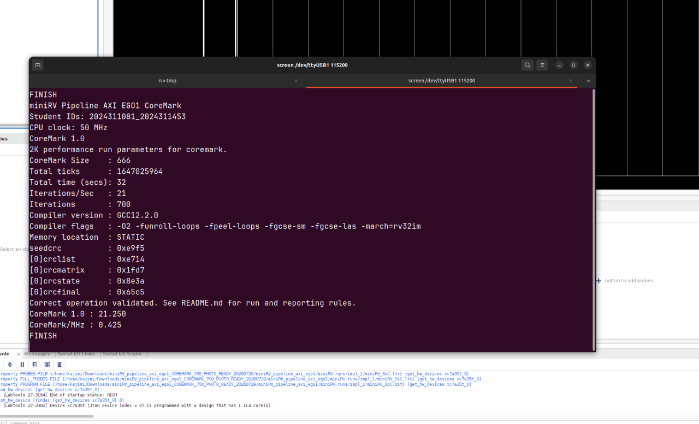
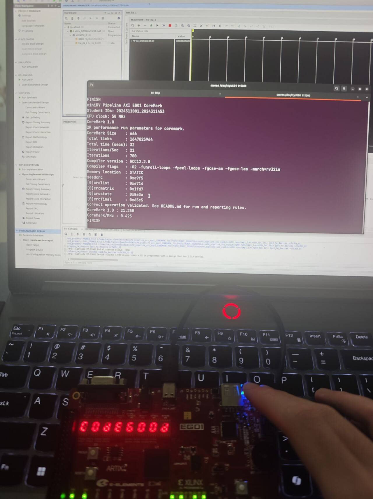
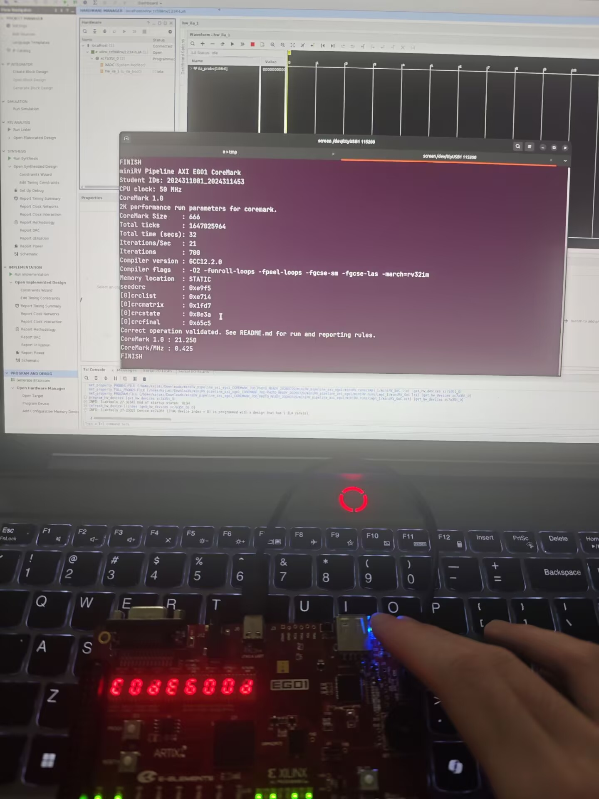
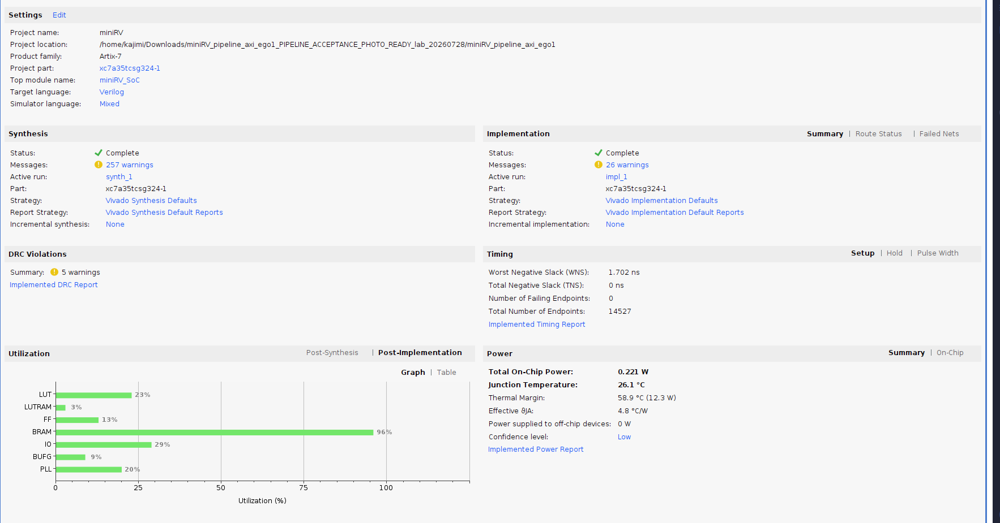

流水线是什么？
IF/ID/EX/MEM/WB 分工，不同指令并行占用不同级。提高吞吐，不保证单条延迟。理想 CPI≈1，AXI、load-use、M 扩展使实际更高。
主讲同学讲完整逻辑；辅助同学用搜索框快速给出文件、行号、信号、指令和证据。
懂框架懂代码懂调试具体指令逐周期波形core 与 AXI/板级外设解耦。
valid、forward、stall、flush、freeze。
PC→AXI→stage→WB/MMIO。
45/45 + VCD + 实板 CoreMark。
IF/ID/EX/MEM/WB 分工，不同指令并行占用不同级。提高吞吐，不保证单条延迟。理想 CPI≈1，AXI、load-use、M 扩展使实际更高。
valid=真实指令；bubble=valid 0；stall=寄存器保持；flush=错误路径 valid 清零。波形先看 valid。
按序发射、执行、提交且单 WB 口，年轻指令不能越过老指令，因此处理后读等待前写的 RAW。
无预测，EX 解析；taken flush IF/ID 和 ID/EX，旧 AXI 取指响应被过滤。
唯一 AXI Master 被取指/数据共享；优先级 data write > data read > instruction read。
同拍都为 1 才握手。AW/W/B 为写地址/数据/响应，AR/R 为读地址/数据；AW/W 可不同拍。

| 层 | 代码 | 必须会说 |
|---|---|---|
| 顶层 | miniRV_SoC.v | Trace/板级、PLL/reset、ILA |
| 适配 | cpu_top.v | 请求防重、过期取指 |
| 核心 | cpu_core.v | 五级、hazard、forward、freeze、WB |
| 级间 | pipeline_regs.v | 四组寄存器、valid/stall/flush |
| 译码 | Controller.v · RF.v · SEXT.v | 控制、x0、立即数 |
| 执行 | forward_unit.v · ALU.v · ALU_multicycle.v | 前递、分支、M busy |
| M扩展 | multiplier.v · divider.v | 移位加法、逐位除法 |
| 访存 | MREQ.v · MEXT.v | WSTRB/lane、符号扩展 |
| AXI | axi_master.v · axi_board_soc.v | 五通道、BRAM/MMIO |
| 外设 | board_bram.v · simple_uart.v · sevenseg_display.v | 150 KiB、115200 8N1、扫描 |
// cpu_core.v:43-56, 521-534（搜索 ifetch_addr）
if (ex_bj_f) pc <= ex_bj_target;
else if (ifetch_valid && !stall_if) pc <= pc + 4;
assign ifetch_addr = ex_bj_f ? ex_bj_target : pc;地址出现不等于取到指令；AR 握手接受地址，R 握手返回数据，ifetch_valid 周期结束时 IF/ID 才锁存。
IF/ID 上升沿锁存 id_inst 后，整个周期组合译码、读 RF、扩展立即数；下一上升沿进入 ID/EX。
先选前递操作数，再做 ALU/分支/地址计算；taken 当周期产生 target/flush。
MREQ 形成地址/WSTRB，MEXT 做 load 子字节扩展，memory_freeze 等 AXI 完成。
wb_valid && wb_rf_we 时写 RF；结果来自 ALU/RAM/PC+4/EXT。
WB_ALU → 算术/AUIPC/M扩展
WB_RAM → load
WB_PC4 → JAL/JALR
WB_EXT → LUIadd x3,x1,x2
sub x4,x3,x5sub 在 EX、add 在 MEM 时 forward=01；生产者在 WB 时 forward=10。MEM 优先。
lw x2,0(x1)
addi x3,x2,1stall_if 保持 PC/IF-ID，id_valid_for_ex=0 注入 bubble；数据到 WB 后 forward=10。
rs1 地址和 rs2 写数据分别前递，fwd_store_data 写入 EX/MEM。
EX taken→target+flush；pending address 过滤旧 AXI 返回。
启动拍即 busy，锁存前递后操作数；完成后进 MEM，bubble 不重启旧 M。
wire load_use_hazard = ex_is_load && ex_rf_we && (ex_rd != 0) &&
((id_uses_rs1 && ex_rd == id_rs1) ||
(id_uses_rs2 && ex_rd == id_rs2));| 指令 | 沿数据通路 | 追问点 |
|---|---|---|
addi x3,x0,42 | EXT_I→ADD→WB_ALU | x0 读 0、禁止写 |
add x4,x3,x5 | 两源可前递→EX 加→WB | MEM/WB 优先级 |
lh x5,1(x1) | EX 地址→AXI 对齐读整字→MEXT offset1 符号扩展→WB_RAM | lh/lhu |
sb x5,2(x1) | WSTRB=0100，低 8 位移到 lane2，等 B | AWADDR 对齐 |
sw x5,0(x1) | store data 前递，WSTRB=1111，B 响应完成 | 一次提交 |
beq x1,x2,L | EXT_B→EX 前递比较→taken flush | 末位补 0 |
jal/jalr | 目标 PC+imm / rs1+imm&~1，rd=PC+4 | JALR rs1 前递 |
lui/auipc | LUI 写 U-imm；AUIPC 写 PC+U-imm | WB_EXT/WB_ALU |
mul/div/rem | EX 多周期、busy freeze、完成后 WB_ALU | 除零/连续 M |

| 阶段 | 指令状态 | 波形解释 |
|---|---|---|
| lw 在 EX，addi 在 ID | rd2 命中 rs1=2 | load_use=1，stall_if=1，下一拍 EX bubble |
| lw 在 MEM | addi 保持 | daccess_ren=F、地址 0x10；memory_freeze 等 R |
| R response | load 数据=42 | daccess_rvalid=1，解除 freeze |
| addi x3 在 EX | load 在 WB | forward_a=10，得到 42，算 43 |
| addi x4 在 EX | x3 在 MEM | forward_a=01，得到 43，算 45 |



IDLE
├─ READ → RADDR --AR--> RDATA --R--> IDLE
└─ WRITE → WSEND --AW和W均完成--> WRESP --B--> IDLEMaster response 同拍回 IDLE，core 下一沿才撤旧请求；cpu_top 在 response 拍屏蔽请求，AXI Trace 从 41/45 修到 45/45。
接受取指时记录 pending word address，返回时仅在它仍等于当前 core 地址时产生 ifetch_valid。
| 地址 | 内容 | CoreMark |
|---|---|---|
00000000..000257FF | IROM 50 KiB + DRAM 100 KiB | 代码、栈、数据 |
FFFF1000 | LED | PASS/error |
FFFF2000 | 数码管 | C0DE600D |
FFFF3000..C | UART | 结果输出 |
FFFF4000/+8 | 64-bit timer | ticks |
| 现象 | 先看 | 再查 |
|---|---|---|
| LED/串口全无 | pll_lock、sys_rst、PC | 第一笔 AR |
| AR 握手，R 不来 | ARADDR | AXI Slave/BRAM pending |
| R 握手，ifetch_valid 0 | pending/current addr | 是否正常过滤旧取指 |
| PC 发 A 无反应 | raw RX→sync→state→valid→data | CPU 是否读 FFFF3008/3000 |
| rx_data 一直 41 | UART load 地址 | load duplicate/WB 前递 |
| MUL 错 | operation_start/busy/a/b | 启动拍 freeze |
[173] PLL[172] reset[171:140] PC[139:138] ifetch[137:106] ARADDR[105:74] RDATA[73:70] AR/R[69:38] AWADDR[37:6] WDATA[5:0] AW/W/B| 频率 | 50 MHz |
|---|---|
| 运行 | 32 s / 700 iterations |
| CoreMark | 21.250 |
| /MHz | 0.425 |
| 校验 | Correct operation validated |
| 结束码 | C0DE600D |
高-低-高读 timer，避免低 32 位回卷拼接错误。CoreMark/MHz 不是 IPC/CPI。



